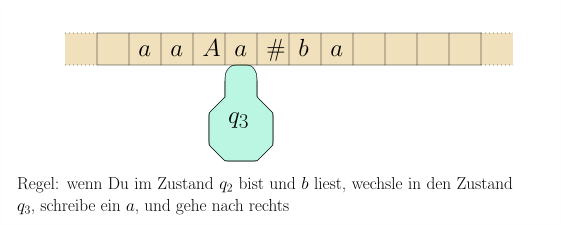
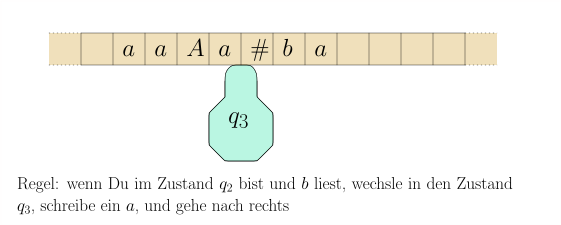

import Section from "~/components/Section";
import Paragraph from "~/components/Paragraph";
import Container from "~/components/Container";
import Carousel from "~/components/Carousel";
import NumberedTitle from "~/components/NumberedTitle";
const Article = () => {
  return (
    <Container>
      <Section
        count={42}
        title_gr="Turingmaschinen: Formale Definition und Beispiele"
        title_en="Turing machines definition"
        number={7.1}
        counter="DefCtr"
        counter="ExoCtr"
        path="/lecture-notes42.tsx">
        <div id="link-to-toc">
          <a href="../vorlesungsskript">
            Inhaltsverzeichnis
          </a>
          <a href="07-00-Turing-machines">
            &lt;&lt; Kapitel 7.0
          </a>
        </div>
        <div
          id="link-to-overview"
          style="text-align: end">
          <a href="/">
            zur Kursübersicht
          </a>
          <a href="07-02-Turing-machines-examples">
            Kapitel 7.2 &gt;&gt;
          </a>
        </div>
        <div id="rightSideWrapper">
          <div class="content">
            <div class="chapter">
              <div class="subChapter">
                <h1 class="hidden-title">
                  <span class="subChapterTitle">
                    7.1 
                    Turingmaschinen: Formale Definition und Beispiele
                  </span>
                </h1>
                <Paragraph>
                  Eine Turingmaschine besteht aus einem{" "}
                  <i>
                    Band
                  </i>
                  , das in Zellen unterteilt ist und
                  in beide Richtungen unbegrenzt ist,
                  und einem{" "}
                  <i>
                    Schreib-Lese-Kopf
                  </i>
                  .
                  Dieser befindet sich in jedem Schritt auf einer
                  Zelle. Wie auch der endliche Automat oder der
                  Kellerautomat hat die Turingmaschine einen internen{" "}
                  <i>
                    Zustand
                  </i>
                  .
                  In jedem Schritt liest die Maschine das Zeichen, das sich in der aktuellen
                  Zelle des Bandes befindet (dort, wo der Kopf steht). Abhängig vom gelesenen Zeichen
                  \(s\) und dem internen Zustand \(q\) schreibt die Turingmaschine ein neues Symbol
                  \(s'\) in die Zelle, wechselt in einen neuen Zustand \(q'\) und bewegt
                  den Kopf um maximal eine Zelle, also nach link, rechts, oder gar nicht.
                </Paragraph>
                <figure class="centered-figure well container">
                  <Carousel>
                    
                    
                    
                    
                    
                    
                    
                    
                  </Carousel>
                </figure>
                <Paragraph>
                  Sie können sich das Band auch als Magnetband vorstellen, das nach vorn oder nach hinten gespult
                  wird, anstatt dass der Kopf sich bewegt. Am Anfang steht auf dem Band das
                  <i>
                    Eingabewort
                  </i>
                  {" "}und der Kopf auf dem ersten Symbol dieses Wortes. Die Turingmaschine
                  wendet
                  nun ihre Regeln an, bis Sie einen
                  <i>
                    Endzustand
                  </i>
                  {" "}erreicht. Bei{" "}
                  <i>
                    Entscheidungsproblemen
                  </i>
                  , wo uns nur
                  eine Ja/Nein-Antwort interessiert, wird die Antwort durch den Entzustand angegeben:
                  der Zustand \(\qaccept\) entspricht einem{" "}
                  <i>
                    Ja
                  </i>
                  , der Zustand
                  \(\qreject\) entspricht einem{" "}
                  <i>
                    Nein
                  </i>
                  . Diese zwei Endzustände reichen im Allgemeinen
                  aus. Wenn wir von der Maschine eine komplexere Ausgabe als Ja/Nein erwarten, so
                  betrachten wir als{" "}
                  <i>
                    Ausgabe der Turingmaschine
                  </i>
                  {" "}den Inhalt des Bandes zu dem
                  Zeitpunkt, da die Maschine den Zustand \(\qaccept\) erreicht.
                  Was brauchen wir also, um so eine Turingmaschine
                  und ihre Arbeitsweise zu beschreiben?
                </Paragraph>
                <div class="well container theorem">
                  <Paragraph>
                    <span class="numbered-title">
                      Definition
                      <NumberedTitle>
                        &ensp;7.1.1{" "}
                      </NumberedTitle>
                    </span>
                    {" "}{" "}
                    <b>
                      (Turingmaschine).
                    </b>
                    {" "}Eine
                    Turingmaschine besteht aus folgenden Elementen:
                  </Paragraph>
                  <ol>
                    <li>
                      Einem endlichen Eingabe-Alphabet \(\Sigma\). Dies sind die Symbole, die für das
                      Eingabewort in
                      Frage kommen.
                    </li>
                    <li>
                      Einem endlichen Bandalphabet \(\Gamma\); das sind die Symbole, die auf dem Band
                      stehen dürfen. Offensichtlich muss \(\Sigma \subseteq \Gamma\) gelten. Jede
                      Zelle kann genau ein Zeichen aus \(\Gamma\) enthalten. Darüberhinaus
                      gibt es noch das sogenannte Blanksymbol \(\square \in \Gamma \setminus \Sigma\). Dies
                      zeigt an, dass die Zelle im Moment leer ist. Im obigen Beispiel ist
                      die Zelle links vom ersten \(a\) beispielsweise leer.
                      Am Anfang steht auf dem Band also ein Eingabewort \(w \in \Sigma^*\) und
                      rechts und links davon unendlich viele \(\square\)-Symbole.
                    </li>
                    <li>
                      Einer endliche Menge \(Q\) an inneren Zuständen. Dies entspricht in etwa
                      den Prozessor-Registern eines Computers. Ein Zustand \(\texttt&#123;start&#125; \in Q\)
                      ist der Startzustand, in welchem sich die Maschine zu Beginn befindet.
                    </li>
                    <li>
                      Einer Zustandsübergangsfunktion \(\delta\), die sagt, was die Turingmaschine tun soll,
                      wenn Sie im Zustand \(q\) ist und Zeichen \(s\) liest. Formal:
                      $$\begin&#123;align*&#125;
                      \delta : Q \times \Gamma \rightarrow Q \times \Gamma \times \lsr \ ,
                      \end&#123;align*&#125;$$
                      wobei{" "}
                      <tt>
                        L
                      </tt>
                      &ensp;für{" "}
                      <i>
                        gehe eine Zelle nach links
                      </i>
                      {" "}steht,
                      <tt>
                        R
                      </tt>
                      &ensp;für rechts und{" "}
                      <tt>
                        S
                      </tt>
                      &ensp;für{" "}
                      <i>
                        stay
                      </i>
                      , also die Anweisung, den Kopf
                      nicht zu bewegen.
                    </li>
                    <li>
                      Zwei besonderen Zuständen \(\qaccept\) und \(\qreject\).
                    </li>
                  </ol>
                </div>
                <Paragraph>
                  Für die Turingmaschine in dem obigen Beispiel haben wir zwei Regeln gesehen:
                  $$\begin&#123;align*&#125;
                  \delta(q_2, b)&amp;= (q_3, a, \texttt&#123;R&#125;) \\
                  \delta(q_3, \#)&amp;= (q_4, b, \texttt&#123;L&#125;)
                  \end&#123;align*&#125;$$
                </Paragraph>
                <h3>
                  Was macht eine Turingmaschine?
                </h3>
                Sie haben nun wohl bereits eine vage Vorstellung, was eine Turingmaschine macht.
                Versuchen wir, es noch weiter zu formalisieren. Um den{" "}
                <i>
                  Gesamtzustand
                </i>
                {" "}der
                Turingmaschine zu beschreiben, also eine vollständige Momentaufnahme, reicht
                nicht der aktuelle innere Zustand \(q\); wir brauchen auch den Bandinhalt und insbesondere
                die Position, an der sich der Kopf befindet. Das alles zusammen nennt
                man die{" "}
                <i>
                  Konfiguration der Turingmaschine
                </i>
                . Wir wollen sie mit
                uns bereits bekannten mathematischen Begriffen beschreiben.
                <figure>
                  
                </figure>
                <div class="well container theorem">
                  <span class="numbered-title">
                    Definition
                    <NumberedTitle>
                      &ensp;7.1.2{" "}
                    </NumberedTitle>
                  </span>
                  Die{" "}
                  <i>
                    Konfiguration
                  </i>
                  {" "}einer Turingmaschine ist ein Element in
                  \(\Gamma^* \times Q \times \Gamma^*\), also
                  $$\begin&#123;align*&#125;
                  C = u q v
                  \end&#123;align*&#125;$$
                  wobei \(uv \in \Gamma^*\) der Bandinhalt ist, der
                  Schreib-Lese-Kopf auf dem ersten Zeichen von \(v\) steht und \(q\) der
                  innere Zustand der Turingmaschine ist. Das \(q\) in \(C\)
                  kennzeichnet also sowohl die Position des Schreib-Lese-Kopfes auf dem Band
                  sowie den inneren Zustand
                  Die Menge aller Konfigurationen ist
                  $$\begin&#123;align*&#125;
                  \mathcal&#123;C&#125; := \Gamma^* \times Q \times \Gamma^*
                  \end&#123;align*&#125;$$
                  Der{" "}
                  <i>
                    Zustand einer Konfiguration
                  </i>
                  {" "}\(C = uqv\) ist \(q\), also der innere
                  Zustand, in dem sich die Maschine gerade befindet.
                  Wir bezeichnen mit \(\state(C)\). Formal:
                  $$\begin&#123;align*&#125;
                  \state: \mathcal&#123;C&#125;&amp;\rightarrow Q \\
                  uqv&amp;\mapsto q \ .
                  \end&#123;align*&#125;$$
                  Eine Konfiguration \(C\) ist
                  eine{" "}
                  <i>
                    akzeptierende Endkonfiguration
                  </i>
                  {" "}wenn \(\state(C) = \qaccept\) ist;
                  eine{" "}
                  <i>
                    ablehnende Endkonfiguration
                  </i>
                  {" "}, wenn \(\state(C) = \qreject\) ist.
                  In beiden Fällen ist \(C\) eine{" "}
                  <i>
                    Endkonfiguration
                  </i>
                  .
                </div>
                <Paragraph>
                  Wenn also das Eingabewort \(w \in \Sigma^*\) und \(\qstart\) der Startzustand ist, dann ist
                  $$\begin&#123;align*&#125;
                  C_&#123;\rm start&#125; = \qstart&#123;&#125; w
                  \end&#123;align*&#125;$$
                  die{" "}
                  <i>
                    Startkonfiguration
                  </i>
                  .
                </Paragraph>
                <div class="alert-info">
                  {" "}{" "}
                  <b>
                    Die Rolle des \(\square\)-Symbols
                  </b>
                  . Das Band der Turingmaschine ist ja
                  unendlich.
                  Um eine Momentaufnahme dennoch als endliches Objekt beschreiben zu können,
                  lassen wir die \(\square\)-Symbole links und rechts vom "eigentlichen" Bandinhalt weg.
                  Bei einer Konfiguration \(uqv\) stehen also links vom \(u\) und rechts vom \(v\) unendlich
                  viele \(\square\)-Symbole auf dem Band. Nach der formalen Definition
                  \(uqv \in \Gamma^* \times Q \times \Gamma^*\) ist es nicht verboten, dass \(u\) auch mit
                  einem \(\square\)-Symbol beginnt oder \(v\) mit einem aufhört. Allerdings wären die
                  Konfiguration
                  \(\square u q v\) und \(u q v \square\) genauso gut mit
                  \(u q v\) beschrieben. Wir können uns also auf die Konvention einigen, dass
                  \(\square\) nie am Rande einer Konfiguration \(uqv\) steht.
                  Beachten Sie auch, dass die Zellen nicht "numeriert" sind. Die beiden folgenden
                  Momentaufnahmen
                  <figure>
                    
                  </figure>
                  können also beide mit der Konfiguration \(aAAaq\#ba\) beschrieben werden, obwohl
                  die Zellen nun andere Inhalte haben, weil die Turingmaschine es irgendwie geschafft
                  hat, den ganzen Bandinhalt um eins nach rechts zu kopieren. Es sollte klar
                  sein, dass die Turingmaschine keine Möglichkeit hat, die obere von der unteren
                  Situation zu unterscheiden, und dass es somit nur recht und billig ist, beide
                  als eine identische Konfiguration aufzufassen.
                  <Paragraph>
                    All diese Schwierigkeiten verschwinden, wenn wir uns den Speicher einer Turingmaschine
                    nicht
                    als unendliches Band vorstellen, sondern als zwei Stapel, einer links vom Kopf und einer
                    rechts vom Kopf. Allerdings hat sich die Vorstellung vom Band irgendwie als
                    Standard durchgesetzt. Hier sehen Sie die gleiche Konfiguration in dem Modell
                    mit zwei Stapeln:
                  </Paragraph>
                  <figure>
                    
                  </figure>
                  <Paragraph>
                    Alternativ können wir auch der Turingmaschine verbieten, das Blank-Symbol \(\Box\) jemals
                    zu schreiben. Dann wäre also
                    \(\delta: Q \times \Gamma \rightarrow Q \times (\Gamma \setminus \&#123;\Box\&#125;) \times \lsr\).
                    All diese Betrachtungsweisen unterscheiden sich nicht wesentlich. Wir bleiben
                    bei unserem "alten" \(\delta\), erlauben also, \(\Box\) zu schreiben, und
                    leben damit, dass \(uqv\) und \(\Box \Box u q v \Box\) formal zwei verschiedene Konfigurationen
                    sind, auch wenn beide irgendwie das selbe beschreiben.
                  </Paragraph>
                </div>
                <Paragraph>
                  Formal definiert \(\delta\) nun auch
                  eine Funktion auf der Menge der Konfigurationen:
                </Paragraph>
                <div class="well container theorem">
                  <span class="numbered-title">
                    Definition
                    <NumberedTitle>
                      &ensp;7.1.3{" "}
                    </NumberedTitle>
                  </span>
                  {" "}{" "}
                  <b>
                    (erweiterte Zustandsübergangsfunktion)
                  </b>
                  Die erweiterte Zustandsübergangsfunktion einer Turingmaschine ist
                  $$\begin&#123;align*&#125;
                  \hat&#123;\delta&#125; : \mathcal&#123;C&#125; \rightarrow \mathcal&#123;C&#125; \
                  \end&#123;align*&#125;$$
                  Sie beschreibt für eine Konfiguration \(C\), welches die Konfiguration
                  im nächsten Schritt ist.
                  Per Konvention
                  legen wir fest, dass
                  \(\hat&#123;\delta&#125;(C) = C\) gilt, wenn \(C\) eine Endkonfiguration ist.
                </div>
                Unsere obige Turingmaschine hat beispielsweise die Regeln
                \(\delta(q_2,b) = (q_3, a,R)\) und
                \(\delta(q_3, \#) = (q_4, b, \texttt&#123;L&#125;)\), und somit würden
                $$\begin&#123;align*&#125;
                \hat&#123;\delta&#125;(aaAq_2b\#ba)&amp;= aaAaq_3\#ba \\
                \hat&#123;\delta&#125;(aaAaq_3\#ba)&amp;= aaAq_4abba \\
                \hat&#123;\delta&#125;(abAq_2bba\#)&amp;= abAaq_3ba\# \\
                \end&#123;align*&#125;$$
                gelten. Sie sehen:
                Die Definition von \(\hat&#123;\delta&#125;\) ist nichts wirklich Tiefgründiges, sondern einfach
                eine Implementierung der Turingmaschinen-Momentaufnahme mit uns bereits
                geläufigen mathematischen "Datenstrukturen" (hier: der Menge \(\Gamma^* \times Q \times \Gamma^*\)).
                Stellen Sie sich einfach
                vor, Sie müssten eine Turingmaschine in Java implementieren. Dann würden Sie es wahrscheilich
                irgendwie so ähnlich machen.
                <h3>
                  Ausgabekonfiguration einer Turingmaschine
                </h3>
                Die Funktion \(\hat&#123;\delta&#125;\) bildet aus einer Konfiguration die
                Folgekonfiguration. Wir definieren nun
                $$\begin&#123;align*&#125;
                \hat&#123;\delta&#125;^&#123;(i)&#125; (C) := \underbrace&#123;\hat&#123;\delta&#125;(\hat&#123;\delta&#125;(\dots (\hat&#123;\delta&#125;&#125;_&#123;i \textnormal&#123;
                mal&#125;&#125; (C) \dots)))
                \end&#123;align*&#125;$$
                also die Konfiguration, die die Turingmaschine nach \(i\) Rechenschritten erreicht hat.
                Weiterhin definieren wir
                \(\hat&#123;\delta&#125;^* (C)\) als die Endkonfiguration, die bei wiederholter
                Anwendung von \(\hat&#123;\delta&#125;\) schlussendlich erreicht wird.
                Hier taucht ein Problem auf: es ist nicht gesagt, dass die Turingmaschine,
                von Konfiguration \(C\) beginnend, überhaupt irgendwann in einer Endkonfiguration landen
                wird. Daher kann \(\hat&#123;\delta&#125;^*\) auch{" "}
                <tt>
                  undefined
                </tt>
                &ensp;sein:
                $$\begin&#123;align*&#125;
                \hat&#123;\delta&#125;^* (C) := \begin&#123;cases&#125;
                \hat&#123;\delta&#125;^&#123;(i)&#125; (C)&
                \textnormal&#123; wenn es ein \(i\) gibt, so dass $\hat&#123;\delta&#125;^&#123;(i)&#125; (C)$ eine Endkonfiguration ist&#125; \\
                \texttt&#123;undefined&#125;&amp;\textnormal&#123;sonst.&#125;
                \end&#123;cases&#125;
                \end&#123;align*&#125;$$
                <Paragraph>
                  Nochmal zur Verdeutlichung: wenn \(\delta^&#123;(i)&#125;(C)\) eine Endkonfiguration ist,
                  dann ist auch \(\delta^&#123;(j)&#125;(C)\) eine, für jedes \(j \geq i\), weil
                  wir \(\hat&#123;\delta&#125;(C') = C'\) für jede Endkonfiguration \(C'\) definiert haben.
                  Es spielt also in der obigen Formulierung
                  <i>
                    wenn es ein \(i\) gibt
                  </i>
                  {" "}keine Rolle, welches solche \(i\) wir wählen.
                </Paragraph>
                Für ein Eingabewort \(x \in \Sigma^*\) können wir nun das Ergebnis der Berechnung
                von Turingmaschine \(M\) auf \(x = x_1 \dots x_n\) definieren:
                $$\begin&#123;align*&#125;
                \hat&#123;M&#125;(x) := \hat&#123;\delta&#125;^* (\qstart&#123;&#125; x_1 x_2 x_3 \dots x_n) \ .
                \end&#123;align*&#125;$$
                Wir beginnen also mit der Startkonfiguration und lassen die Turingmaschine dann
                laufen, bis sie einen Endzustand erreicht. Die erreichte Konfiguration bezeichnen
                wir mit \(\hat&#123;M&#125;(x)\). Falls nie ein Endzustand erreicht wird (die Turingmaschine also
                endlos läuft),
                ist \(\hat&#123;M&#125;(x)\){" "}
                <tt>
                  undefined
                </tt>
                .
                <h2>
                  Sprachen entscheiden
                </h2>
                <Paragraph>
                  Ein{" "}
                  <i>
                    Entscheidungsproblem
                  </i>
                  {" "}ist eine Funktion \(P : \Sigma^* \rightarrow
                  \&#123;\texttt&#123;true&#125;, \texttt&#123;false&#125;\&#125;\), beispielsweise:{" "}
                  <i>
                    gegeben ein Wort,
                    stellt dieses Wort ein korrektes Java-Programm dar?
                  </i>
                  oder{" "}
                  <i>
                    gegeben eine Zahl in Dezimalschreibweise, ist dies
                    eine Primzahl?
                  </i>
                  {" "}Eine äquivalente Sichtweise ist die
                  eines Entscheidungsproblems als{" "}
                  <i>
                    Sprache
                  </i>
                  {" "}\(L \subseteq \Sigma^*\).
                  Wir identifizieren \(L\) hier mit der Menge aller Wörter \(x\) mit
                  \(P(x) = \texttt&#123;true&#125;\). Wenn wir es mit einem Entscheidungsproblem
                  zu tun haben und dieses mit einer Turingmaschine lösen wollen,
                  so interessiert uns am Endergebnis \(\hat&#123;M&#125;(x)\) (also der erreichten Endkonfiguration)
                  nicht der Bandinhalt, sondern nur, ob der Zustand{" "}
                  <tt>
                    accept
                  </tt>
                  &ensp;oder
                  <tt>
                    reject
                  </tt>
                  &ensp;ist. Wir definieren daher
                  $$\begin&#123;align*&#125;
                  f_M(x) = \begin&#123;cases&#125;
                  \texttt&#123;accept&#125;&amp;\textnormal&#123; falls $\state(\hat&#123;M&#125;(x)) = \qaccept$, wenn also $\hat&#123;M&#125;(x)$
                  eine akzeptierende Endkonfiguration ist, &#125;\\
                  \texttt&#123;reject&#125;&amp;\textnormal&#123; falls $\state(\hat&#123;M&#125;(x)) = \qreject$ ,&#125;\\
                  \texttt&#123;undefined&#125;&amp;\textnormal&#123; falls $\hat&#123;M&#125;(x) = \texttt&#123;undefined&#125;$ &#125;
                  \end&#123;cases&#125;
                  \end&#123;align*&#125;$$
                </Paragraph>
                <div class="well container theorem">
                  <span class="numbered-title">
                    Definition
                    <NumberedTitle>
                      &ensp;7.1.4{" "}
                    </NumberedTitle>
                  </span>
                  {" "}{" "}
                  <b>
                    (Turingmaschine entscheidet eine Sprache)
                  </b>
                  Eine Turingmaschine \(M\)
                  <i>
                    entscheidet
                  </i>
                  {" "}die Sprache \(L \subseteq \Sigma^*\) wenn
                  <ol>
                    <li>
                      \(f_M(x) = \texttt&#123;accept&#125;\) für alle \(x \in L\),
                    </li>
                    <li>
                      \(f_M(x) = \texttt&#123;reject&#125;\) für alle \(x \in \Sigma^* \setminus L\).
                    </li>
                  </ol>
                  Insbesondere heißt das, dass \(M\) auf jedem Eingabewort terminiert.
                  <Paragraph>
                    Eine Sprache \(L\) heißt{" "}
                    <i>
                      entscheidbar
                    </i>
                    , wenn
                    es eine Turingmaschine gibt, die sie entscheidet.
                  </Paragraph>
                </div>
                <div class="well container theorem">
                  <span class="numbered-title">
                    Definition
                    <NumberedTitle>
                      &ensp;7.1.5{" "}
                    </NumberedTitle>
                  </span>
                  {" "}{" "}
                  <b>
                    (Turingmaschine akzeptiert eine Sprache)
                  </b>
                  Eine Turingmaschine \(M\){" "}
                  <i>
                    akzeptiert
                  </i>
                  {" "}die Sprache
                  \(L \subseteq \Sigma^*\) wenn
                  $$\begin&#123;align*&#125;
                  x \in L \Longleftrightarrow f_M(x) = \texttt&#123;accept&#125;
                  \end&#123;align*&#125;$$
                  für alle \(x \in \Sigma^*\) gilt. Das heißt, dass \(M\) für \(x \not \in \Sigma^*\)
                  entweder irgendwann den Endzustand \(\qreject\) erreicht oder
                  nie einen Endzustand erreicht.
                  <Paragraph>
                    Eine Sprache \(L \subseteq \Sigma^*\) heißt{" "}
                    <i>
                      semi-entscheidbar
                    </i>
                    ,
                    wenn es eine Turingmaschine \(M\) gibt, die \(L\) akzeptiert.
                  </Paragraph>
                </div>
                <Paragraph>
                  In beiden Definition verlangen wir natürlich, dass
                  \(\Sigma\) das Eingabealphabet der Turingmaschine ist.
                </Paragraph>
                <h2>
                  Funktionen berechnen
                </h2>
                <Paragraph>
                  Oft wollen wir nicht nur eine Sprache \(L \subseteq \Sigma^*\)
                  entscheiden, sondern eine Funktion \(g: \Sigma_1^* \rightarrow \Sigma_2^*\)
                  berechnen. Mit einer Turingmaschine heißt das einfach, dass
                  bei Eingabe \(x \in \Sigma_1^*\) die Turingmaschine in einer
                  akzeptierenden Endkonfiguration \(C\) landet, und in \(C\) steht
                  dann \(g(x)\) auf dem Band. Formal müssen wir noch klären, was{" "}
                  <i>
                    \(g(x)\) steht
                    auf dem Band
                  </i>
                  {" "}bedeutet.
                </Paragraph>
                <div class="well container theorem">
                  <span class="numbered-title">
                    Definition
                    <NumberedTitle>
                      &ensp;7.1.6{" "}
                    </NumberedTitle>
                  </span>
                  {" "}{" "}
                  <b>
                    (Turingmaschine berechnet eine Funktion)
                  </b>
                  Seien \(\Sigma_1, \Sigma_2\) zwei endliche Alphabete und
                  $$\begin&#123;align*&#125;
                  g : \Sigma_1^* \rightarrow \Sigma_2^*
                  \end&#123;align*&#125;$$
                  eine Funktion. Eine Turingmaschine \(M\){" "}
                  <i>
                    berechnet die Funktion \(g\)
                  </i>
                  , wenn
                  <ol>
                    <li>
                      \(\Sigma_1\) das Eingabealphabet von \(M\) ist,
                    </li>
                    <li>
                      \(\Sigma_1 \cup \Sigma_2 \subseteq \Gamma\) gilt und
                      \(\square \in \Gamma \setminus (\Sigma_1 \cup \Sigma_2)\); das Blank-Symbol
                      ist also weder Teil das Eingabealphabets noch des Ausgabealphabets.
                    </li>
                    <li>
                      \(M\) terminiert für jedes \(x \in \Sigma^*\).
                    </li>
                    <li>
                      &ensp;In der Endkonfiguration \(\hat&#123;M&#125;(x)\) steht auf dem Arbeitsband das
                      Wort \(g(x) \in \Sigma_2^*\) und der Kopf steht ganz links, also
                      \(\hat&#123;M&#125;(x) = \qaccept&#123;&#125; g(x)\).
                    </li>
                  </ol>
                </div>
                <h2>
                  Turingmaschinen und formale Grammatiken
                </h2>
                <Paragraph>
                  Da Turingmaschinen sowohl in dem Kurs
                  <a href="../../BerKrea/index.html">
                    &ensp;Berechenbarkeit und Kreativität{" "}
                  </a>
                  als auch
                  <a href="../../TI-2/index.html">
                    &ensp;Theoretische Informatik{" "}
                  </a>
                  vorkommen, teilen sich die beiden Kurse diese Seiten.
                  Für Berechenbarkeit und Kreativität ist der Rest dieses Teilkapitels
                  allerdings weniger relevant, da formale Grammatiken nicht Teil des Kurses waren.
                </Paragraph>
                <div class="well container theorem">
                  <span class="numbered-title">
                    Theorem
                    <NumberedTitle>
                      &ensp;7.1.7{" "}
                    </NumberedTitle>
                  </span>
                  Sei \(M\) eine Turingmaschine und \(L(M)\) die von ihr akzeptierte Sprache.
                  Dann gibt es eine formale Grammatik \(G\) mit \(L(G) = L(M)\). In anderen Worten:
                  formale Grammatiken sind mindestens so mächtig wie Turingmaschinen.
                </div>
                <div class="well container">
                  {" "}{" "}
                  <b>
                    Beweis.
                  </b>
                  Die Idee ist, dass wir eine Grammatik \(G\) schreiben, die
                  "in umgekehrter Reihenfolge" läuft, also
                  $$\begin&#123;align*&#125;
                  \texttt&#123;\$&#125; q_&#123;\rm start&#125; w \texttt&#123;.&#125; \Step&#123;&#125;^* S
                  \end&#123;align*&#125;$$
                  ableiten kann genau dann, wenn \(w \in S\) gilt. Wir brauchen
                  \(\texttt&#123;\$&#125;\) und \(\texttt&#123;.&#125;\) als Randmarkierungen. Wir lassen hier
                  temporär zu, dass die linke Seite ausschließlich aus Terminalsymbolen bestehen kann.
                  <Paragraph>
                    Hierfür definieren wir für jede Regel der Turingmaschine eine Grammatik-Regel:
                    $$\begin&#123;align*&#125;
                    \begin&#123;array&#125;&#123;lcl&#125;
                    \delta(q,x) = (r,y,\texttt&#123;S&#125; )&amp;\textnormal&#123;wird zur Produktion&#125;&amp;qx \rightarrow ry \\
                    \delta(q,x) = (y,r,\texttt&#123;R&#125;)&amp;\textnormal&#123;wird zur Produktionen&#125;&amp;qx \rightarrow yr \\
                    \delta(q,x) = (y,r,\texttt&#123;L&#125;)&amp;\textnormal&#123;wird zu den Produktionen&#125;&amp;aqx \rightarrow ray
                    \textnormal&#123; für alle $a \in \Gamma$&#125;
                    \end&#123;array&#125;
                    \end&#123;align*&#125;$$
                    Die Asymmetrie zwischen den Regeln, die den Kopf nach rechts verschieben und denen, die ihn
                    nach links verschieben, ergibt sich aus unserer Konvention, die Konfigurationen \(uqv\) so
                    zu
                    interpretieren, dass der Kopf auf dem ersten Symbol von \(v\)
                    und nicht etwa auf dem letzten von \(u\) steht.
                    Ein Problem ergibt sich, wenn \(q\) am Rand steht. Hierfür erlauben wir,
                    an den Rändern der Konfiguration \(\square\)-Symbole zu erzeugen:
                    $$\begin&#123;align*&#125;
                    \texttt&#123;\$&#125;&amp;\rightarrow \texttt&#123;\$&#125; \square \\
                    \texttt&#123;.&#125;&amp;\rightarrow \square \texttt&#123;.&#125; \
                    \end&#123;align*&#125;$$
                    Wenn der Kopf also vor dem \(\texttt&#123;.&#125;\) stehen sollte,
                    dann können wir
                    $$\begin&#123;align*&#125;
                    \texttt&#123;\$&#125;uq\texttt&#123;.&#125; \Step&#123;&#125; \texttt&#123;\$&#125;uq\square \texttt&#123;.&#125;
                    \end&#123;align*&#125;$$
                    anwenden und dann die Produktion, die der Regel von \(\delta(q,\square)\) entspricht.
                    Es sollte nun klar sein, dass folgendes gilt:
                  </Paragraph>
                  <div class="well subtheorem theorem">
                    <span class="numbered-title">
                      Beobachtung
                      <NumberedTitle>
                        &ensp;7.1.8{" "}
                      </NumberedTitle>
                    </span>
                    Wenn \(\hat&#123;\delta&#125;^&#123;(i)&#125; (uqv) = u'q'v'\) gilt, die Turingmaschine also in
                    \(i\) Schritten von Konfiguration \(uqv\) nach \(u'q'v'\) übergeht, dann gilt in der gerade
                    entwickelten Grammatik auch
                    $$\begin&#123;align*&#125;
                    \texttt&#123;\$&#125;uqv\texttt&#123;.&#125; \Step&#123;&#125;^* \texttt&#123;\$&#125;\square^* u'q'v'\square^*\texttt&#123;.&#125;
                    \end&#123;align*&#125;$$
                  </div>
                  Als nächstes definieren wir{" "}
                  <i>
                    Aufräumregeln
                  </i>
                  : wenn \(q = \texttt&#123;accept&#125;\), dann
                  können wir jedes Zeichen löschen:
                  $$\begin&#123;align*&#125;
                  \texttt&#123;accept&#125;\ x&amp;\rightarrow \texttt&#123;accept&#125; \\
                  x\ \texttt&#123;accept&#125;&amp;\rightarrow \texttt&#123;accept&#125;
                  \end&#123;align*&#125;$$
                  wobei \(\texttt&#123;accept&#125;\) ein Nichtterminal der Grammatik ist.
                  Und somit gilt auch
                  $$\begin&#123;align*&#125;
                  \texttt&#123;\$&#125; u \ \texttt&#123;accept&#125; \ v \texttt&#123;.&#125;&amp;\Step&#123;&#125;^*
                  \texttt&#123;\$&#125;\ \texttt&#123;accept&#125; \ \texttt&#123;.&#125;
                  \end&#123;align*&#125;$$
                  Als letzte Regel definieren wir:
                  $$\begin&#123;align*&#125;
                  \texttt&#123;\$ &#125;\ \texttt&#123;accept&#125;\ \texttt&#123;.&#125; \rightarrow S
                  \end&#123;align*&#125;$$
                  Wir haben nun eine Grammatik mit den folgenden Eigenschaften:
                  $$\begin&#123;align*&#125;
                  M(x_1 x_2 \dots x_n) = \texttt&#123;accept&#125;&amp;\textnormal&#123; genau dann, wenn &#125;
                  \texttt&#123;\$&#125; \texttt&#123;start&#125; x_1 x_2 \dots x_n \texttt&#123;.&#125; \Step&#123;&#125;^* S
                  \end&#123;align*&#125;$$
                  Wir bauen nun eine weitere Grammatik \(G\), in der wir jede Produktion \(\alpha \rightarrow
                  \beta\)
                  umdrehen, also durch \(\beta \rightarrow \alpha\) ersetzen. Zusätzlich definieren wir
                  Abschlussregeln
                  $$\begin&#123;align*&#125;
                  \texttt&#123;\$&#125;&amp;\rightarrow \epsilon \\
                  \texttt&#123;.&#125;&amp;\rightarrow \epsilon \\
                  \texttt&#123;start&#125;&amp;\rightarrow \epsilon
                  \end&#123;align*&#125;$$
                  die die Randmarkierungen ersetzen. In dieser Grammatik gilt nun für
                  alle Wörter \(x \in \Sigma^*\):
                  $$\begin&#123;align*&#125;
                  x \in L(M) \Longleftrightarrow S \rightarrow
                  G: S \Step&#123;&#125;^* x
                  \end&#123;align*&#125;$$
                  und somit gilt \(L(G) = L(M)\). Zusammenfassend besitzt \(G\) also die Produktionen
                  $$\begin&#123;align*&#125;
                  S&amp;\step&#123;1&#125; \texttt&#123;\$&#125; \ \texttt&#123;accept&#125; \ \texttt&#123;.&#125; \\
                  \texttt&#123;accept&#125;&amp;\step&#123;2&#125; x \ \texttt&#123;accept&#125; \ | \ \texttt&#123;accept&#125; \ x \quad
                  \tag&#123; für jedes \(x \in \Gamma\)&#125; \\
                  ry&amp;\step&#123;3&#125; qx \quad \tag&#123; wenn $\delta(q,x) = (r,y, \texttt&#123;S&#125;)$&#125;\\
                  yr&amp;\step&#123;4&#125; qx \quad \tag&#123; wenn $\delta(q,x) = (r,y, \texttt&#123;R&#125;)$&#125;\\
                  ray&amp;\step&#123;5&#125; aqx \quad \tag&#123; wenn $\delta(q,x) = (r,y, \texttt&#123;L&#125;)$, für jedes \(a \in
                  \Gamma\)&#125; \\
                  \texttt&#123;\$&#125; \square&amp;\step&#123;6&#125; \texttt&#123;\$&#125; \\
                  \texttt&#123;.&#125;\square&amp;\step&#123;7&#125; \texttt&#123;.&#125; \\
                  \texttt&#123;\$&#125;&amp;\step&#123;8&#125; \epsilon \\
                  \texttt&#123;.&#125;&amp;\step&#123;9&#125; \epsilon \\
                  \texttt&#123;start&#125;&amp;\step&#123;10&#125; \epsilon
                  \end&#123;align*&#125;$$
                  Um also ein Wort \(x \in L(M)\) abzuleiten, müssen wir
                  die akzeptierende Endkonfiguration \(C\) von \(M(x)\) "erraten" und dann
                  per Produktionen 1 und 2 die Wortform \(\texttt&#123;\$&#125;C\texttt&#123;.&#125;\) ableiten. Von da
                  an verwenden wir die Produktionen 3, 4, 5, 6, 7, um die Berechnung der Turingmaschine
                  \(M(x)\) von hinten nach vorne zu simulieren, bis wir bei
                  \(\texttt&#123;\$&#125; \texttt&#123;start&#125;\ x \texttt&#123;.&#125;\) angelangt sind. Dann
                  lassen wir \(\texttt&#123;\$&#125;, \texttt&#123;start&#125;, \texttt&#123;.&#125;\) mit den Produktionen 8, 9, 10
                  verschwinden und haben \(x\) abgeleitet.
                  <span class="qed">
                    \(\square\)
                  </span>
                </div>
              </div>
            </div>
          </div>
        </div>
      </Section>
    </Container>
  );
};

export default Article;